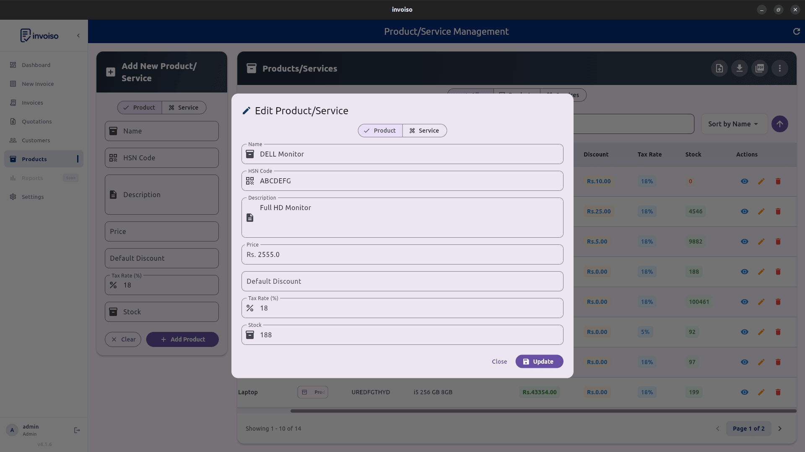
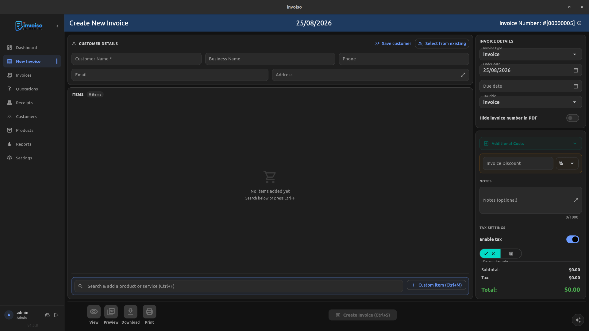

GST 2.0 rewrote the tax rate table most Indian businesses had used since 2017. The old five-slab structure — 0%, 5%, 12%, 18%, and 28% — is gone, replaced by a leaner set of 0%, 5%, 18%, and 40% rates that took effect from 22 September 2025. If you've been billing customers at 12% or 28% on any product or service, that rate no longer exists, and every invoice you raise now has to reflect the new slab. This guide covers what actually changed, how the old rates map onto the new ones, what it means for your day-to-day invoicing, and how to update tax rates on products and invoices in Invoiso.
What GST 2.0 changed
GST 2.0 is the informal name for the rate rationalisation the GST Council approved on 3 September 2025, notified soon after and effective from 22 September 2025. The core change is simple to state even though the item-by-item detail is long: two of the five original slabs — 12% and 28% — have been abolished, and the goods and services that sat in them have been redistributed mostly into 5% and 18%, with a new 40% slab created for luxury and sin goods that previously carried 28% plus a compensation cess on top. That cess has been folded into the headline rate for the items that now sit at 40%, so there's no separate cess line to calculate for those goods anymore. For the vast majority of everyday goods and services — the kind a small business actually invoices day to day — the change lands as either a rate cut or no change at all. It's a smaller group of items that moved upward.
The new rate slabs explained
Four slabs now cover essentially everything under GST:
- 0% (nil-rated / exempt). Unbranded food staples, fresh produce, books, and a handful of essential services stay outside GST entirely, same as before the reform.
- 5%. The most heavily populated slab now. Most goods that used to sit at 12% dropped here — packaged food items, personal care basics, medical devices and consumables, and a range of daily-use goods. Items already at 5% mostly stayed put.
- 18%. The standard, default rate for the bulk of goods and services that don't have a specific reason to sit lower or higher — consumer electronics, most B2B services, apparel above the exemption threshold, and the majority of what used to sit at 28% before this reform.
- 40%. A new top slab reserved for luxury and sin goods: tobacco products, pan masala, aerated drinks, luxury cars, and similar items that carried 28% plus compensation cess under the old structure. The cess is now built into the 40% rate rather than charged separately.
Old-to-new rate mapping: where did 12% and 28% go?
There isn't a single one-line rule that maps every old rate to a new one — the mapping runs item-by-item across the HSN schedule — but the broad pattern looks like this:
- 12% slab → mostly moved to 5% (packaged foods, personal care items, medical devices, agricultural equipment); a smaller share moved to 18% (certain textiles above ₹2,500, select services).
- 28% slab → mostly moved to 18% (air conditioners, televisions, dishwashers, small cars, cement); luxury and sin items moved to 40% (tobacco, pan masala, aerated beverages, luxury and SUV-class vehicles).
- 5% slab → largely unchanged, with some additions absorbed from the old 12% bracket.
- 18% slab → largely unchanged as the base rate, now also absorbing most of the old 28% bracket.
- 0% slab → unchanged, with a few additional essential items added to the exempt list.
Because the mapping isn't uniform for every HSN code, don't assume — check the item's new rate against the official CBIC rate notification or the GST portal's rate finder before you bill it, especially for anything that used to sit at 12% or 28%.

How this affects your invoicing
Three things matter for day-to-day billing under GST 2.0. First, the rate charged has to be the rate in force on the date of supply or invoice, not the rate that applied when you last quoted the customer — if a quote or proforma was prepared before 22 September 2025 using an old rate, update it before converting it into a tax invoice. Second, product and service masters that you set up once and left alone need a review: any product still tagged at 12% or 28% in your invoicing software carries an obsolete rate until you change it, and that obsolete rate will silently apply to every future invoice for that item. Third, if you issued invoices at the old rate close to the transition date and need to correct them, that's a credit note against the old invoice plus a fresh invoice at the new rate — not an edit to the original document, since a tax invoice that's already been issued and filed shouldn't be altered after the fact.
How to update tax rates on invoices in Invoiso
- Open your product list. Go to Products and scan for items previously taxed at 12% or 28% — those are the ones most likely to have changed under GST 2.0.
- Edit the tax rate field. Open each affected product and change its tax rate to match the new slab, based on the CBIC mapping for that HSN code.
- Save the product. Invoiso applies the updated rate to every new invoice line that uses this product automatically — you don't need to touch individual invoices going forward.
- Check for invoice-level overrides. If any invoice sets a custom tax rate instead of pulling it from the product record, review those overrides separately, since they won't update on their own.
- Reissue affected quotes. Regenerate any proforma invoice or quote created before the transition so the customer sees the correct rate before you convert it into a tax invoice.
- Verify before sending. Open the invoice preview and confirm the displayed rate and total tax match the new slab before you finalise, print, or share the PDF.

Common transition mistakes to avoid
- Leaving old 12% or 28% rates on product masters and only fixing the next invoice manually — the wrong rate comes right back the time after that if you don't check.
- Assuming every item that used to sit at 28% now sits at 40%. Most 28% items moved to 18%; only luxury and sin goods moved to the new top slab.
- Editing an already-issued tax invoice instead of raising a credit note for the correction.
- Forgetting recurring or repeat customers on standing orders that reuse old invoices as templates for the next billing cycle.
- Assuming compensation cess still applies as a separate line on 40% items — it's merged into the headline rate now, so charging it again over-collects tax.
GST 2.0 and your GST returns
A rate change on the invoice doesn't, by itself, change how ITC or return filing works — the mechanics of GSTR-1 and GSTR-3B stay the same, and there's no requirement to reverse input tax credit already claimed on stock purchased before the transition just because the outward rate on that stock has since changed. What does need attention is consistency between what you're billing and what you're reporting: if a product's rate changed mid-month, GSTR-1 for that period will show a mix of old-rate and new-rate invoices depending on the actual invoice dates, and that's expected, not an error. The place mistakes tend to show up is stock that was purchased at the old rate but sold after the transition — the GST rate that matters for the sale is always the rate in force on the date of that outward supply, regardless of what rate applied when the stock was originally bought in. If you're carrying a large batch of pre-transition inventory, it's worth flagging it to your accountant so the return filed for that period reconciles cleanly against the invoices actually issued, rather than trying to average or approximate the rate across a mixed batch.
Frequently asked questions
What are the new GST 2.0 tax rate slabs?
Four main slabs: 0% for exempt goods, 5%, 18% as the standard rate, and a new 40% slab for luxury and sin goods, replacing the old 0/5/12/18/28% structure.
When did GST 2.0 come into effect?
The GST Council approved the rate rationalisation on 3 September 2025, and it took effect from 22 September 2025 for most goods and services covered by the reform.
Do I need to change tax rates on invoices raised before the transition?
No — invoices genuinely raised before 22 September 2025 keep whatever rate applied at that time. Only invoices dated on or after the effective date need the new rate; correct a pre-transition invoice that was wrongly billed at the new rate with a credit note, not by editing it.
What happened to the 12% and 28% GST slabs?
Both were abolished. Items that sat in 12% moved mostly to 5% (with some to 18%), and items in 28% moved mostly to 18% (with luxury and sin goods moving to the new 40% slab). Check the official rate notification for the exact mapping of your specific product.
GST rates keep evolving — always cross-check your product's exact new rate against the current CBIC notification before billing. Invoiso lets you edit the tax rate on any product or invoice line in seconds, offline. See free GST billing software or download the desktop app.